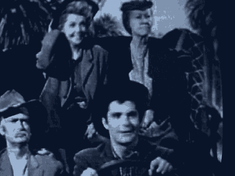

19 MR. FITZGERALD: We would like to display on the
20 Elmo, first, the picture.
21 If we could switch it to the computer, and just
22 reading name, Mohamed, and underneath that, Ali, Abouelseoud,
23 and under place of birth, Egypt, and the indication that at
24 the top of that page that this is a United States passport.
25 If we could also display page 10 of that passport.
3827
1 We can use the Elmo, it's easier, and just reading from the
2 stamp in the upper left corner, Kenya immigration officer, 9
3 Dec. 1993, as well as to the right, a "Camp Immigration
4 Control, Kenya. Good for single journey to Kenya within three
5 months of date herein if passport remains valid," handwritten
6 visit and date written as 9-12-93, and then in the upper right
7 corner, a triangular stamp reflecting Kenya in the upper left
8 corner with the date 24 January 1994, and underneath it
9 JKIA-Nairobi.
10 MR. BUTLER: Government calls Special Agent Gordon
11 Snow, your Honor.
12 GORDON M. SNOW,
13 DEPUTY CLERK: Please be seated, sir.
14 MR. BUTLER: Good morning, Agent Snow.
15 DEPUTY CLERK: State your full name, sir.
16 THE WITNESS: My name is Gordon M. Snow, S-N-O-W.
17 DIRECT EXAMINATION
18 BY MR. BUTLER:
19 Q Good morning, Agent Snow. I'm going to ask you a few
20 questions directed solely to the arrest and transportation of
21 certain individuals to the United States, and I would ask you
22 to just confine your answers to those questions, okay?
23 A All right.
24 Q How are you presently employed?
25 A I'm a supervisor special agent for Federal Bureau of
3828
1 Investigation.
2 Q Which office?
3 A In Washington, D.C. in the FBI headquarters.
4 Q How long have you been with the FBI?
5 A A little over nine years.
6 Q Drawing your attention to August 26, 1998, were you
7 working that day?
8 A Yes, sir, I was.
9 Q What was your assignment that day?
10 A I was a special agent and member of the Hostage Rescue
11 Team in Nairobi, Kenya.
12 Q What specifically was your assignment that day?
13 A I was assigned to transport Mr. al-'Owhali from Nairobi,
14 Kenya to the United States.
15 Q Was it your understanding that Mr. al-'Owhali was under
16 arrest by the United States Government at that time?
17 A Yes, sir, it was.
18 Q And was that arrest related to the charges in this case?
19 A That's correct, sir.
20 Q And were you on the plane with Mr. Al-'Owhali when it left
21 Nairobi?
22 A Yes, sir, I was.
23 Q And where was the first place that that plane landed in
24 the United States?
25 A The first place that we touched down was Stewart Air Force
3829
1 Base in Newburgh, New York.
2 Q And when did you, approximately when did you arrive?
3 A It was early morning on the 27th of August in 1998.
4 Q Were any photographs taken of Mr. al-'Owhali while he was
5 on the airplane during the rendition?
6 A Yes, sir, there were.
7 MR. BUTLER: May I approach, your Honor?
8 THE COURT: Yes.
1